Manage evops app
Start evops app
Before starting for the first time, create a folder in your computer which is dedicated to the evops app data in the host computer. To illustrate, we have created a folder called workdir at the location:
C:\Users\HEWLETT-PACKARD\Documents\workdirThe docker image of the evops app can be run directly from Docker Desktop. Open a Docker Desktop and follows the 13 steps outlined in this walkthrough illustrated in the screenshots below.
Click on the Images tab.
Search for the image called dkengne/evops tagged as latest.
Click on the play button related to the found image.
Expand the Optional settings.
In the Host path, click on the horizontal dotted button.
Find and select the folder (eg. workdir) dedicated to the evops app data in the host computer.
Click on Selectionner un dossier to validate your selection.
In the Container name, enter a desired name. For instance: evops_container.
In the first Host port, specify 8787 which is the port of Rstudio Server.
In the second Host port, specify 8888 which is the port of JupyterLab Server.
In the Container path, enter /home/rstudio/workspace which is the directory dedicated to the evops app data within the container.
Select the Run button. That’s it! The container is ready to use.
Click on the second link to open the evops app in a web browser.
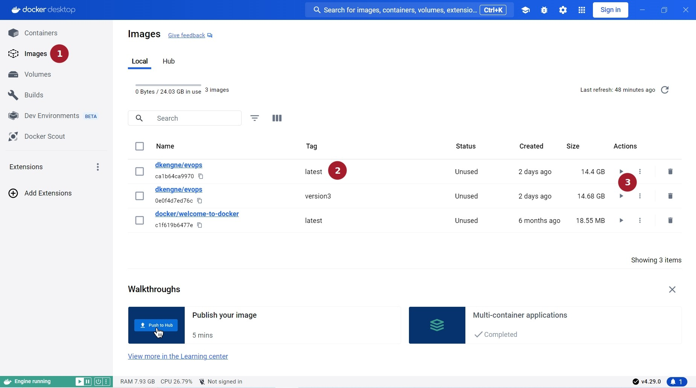
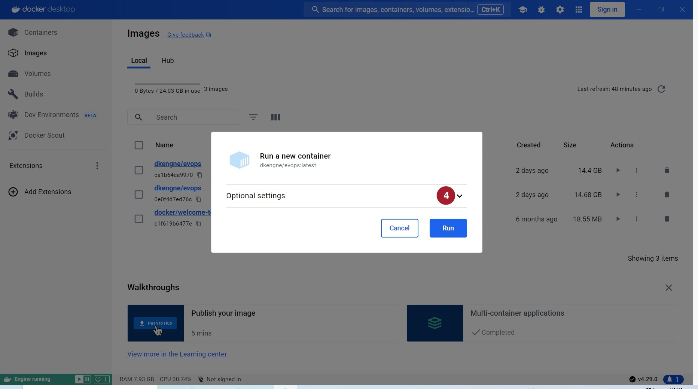
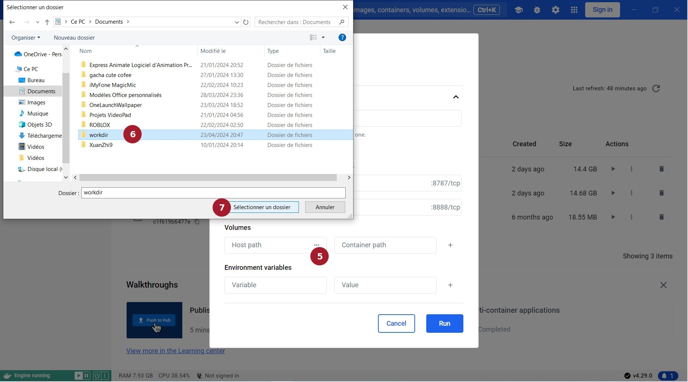

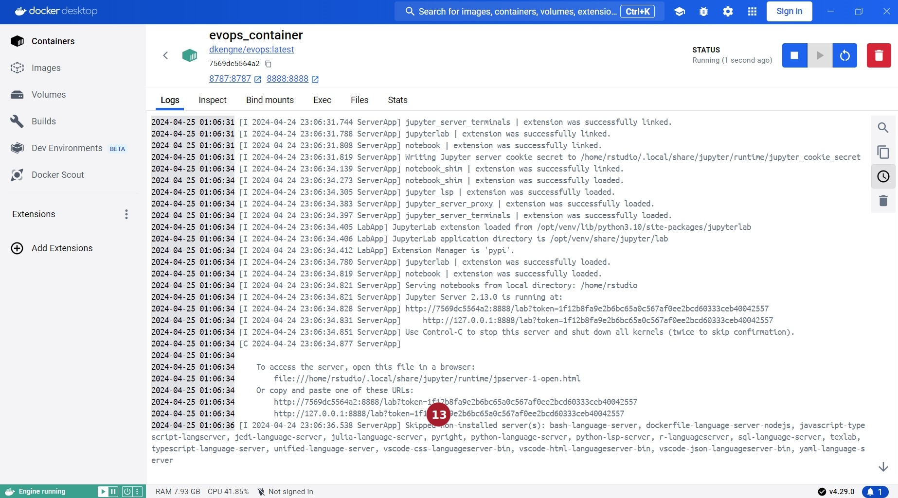
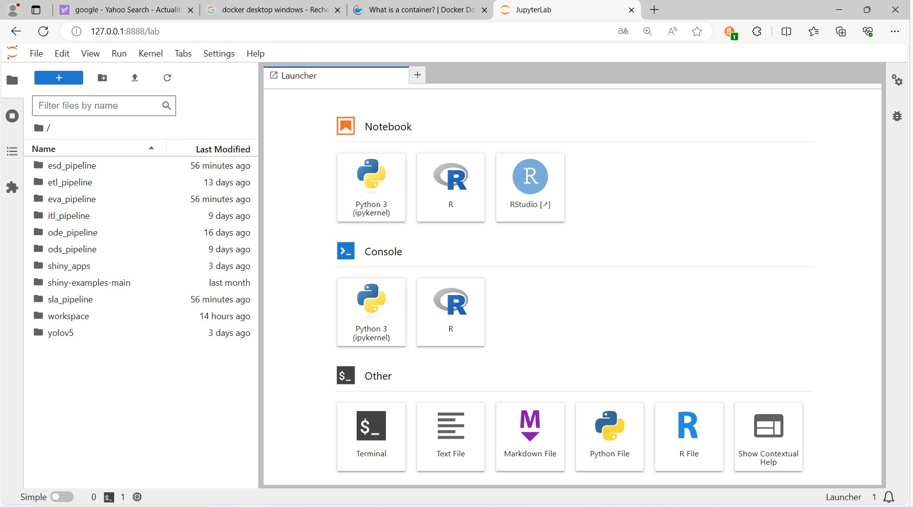
Stop evops app
A docker container in which the evops app is running can be stopped either from the Docker Desktop or from the Web Browser.
From Docker Desktop
To stop a running docker container from Docker Desktop, one can proceed as follows.
Click on the Containers tab.
Search for the name of the running container to stop.
Click on the stop button related to the found container.
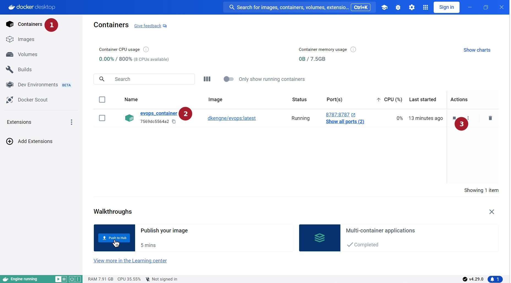
From Web Browser
To stop evops app which is open in a Web Browser, one can proceed as follows.
Click on the File tab.
Select Shut Down in the scrolling menu.
Click the X in the top-right corner of the JupyterLab tab.
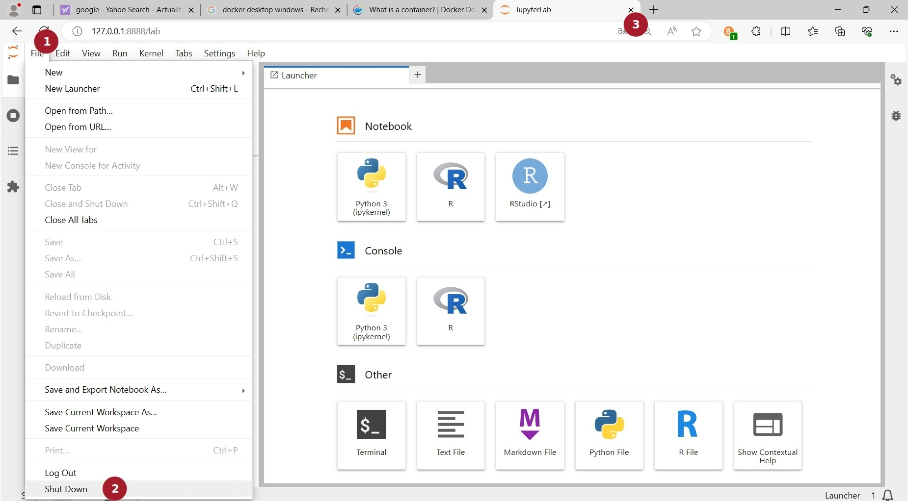
Restart evops app
To restart a stopped docker container associated with evops app, one can proceed as follows.
Click on the Containers tab.
Search for the name of the stopped container to restart.
Click on the play button related to the found container.
Click on the vertical dotted button right to the play button.
Select View details in the scrolling menu.
Click on the second link to open the evops app in a web browser.
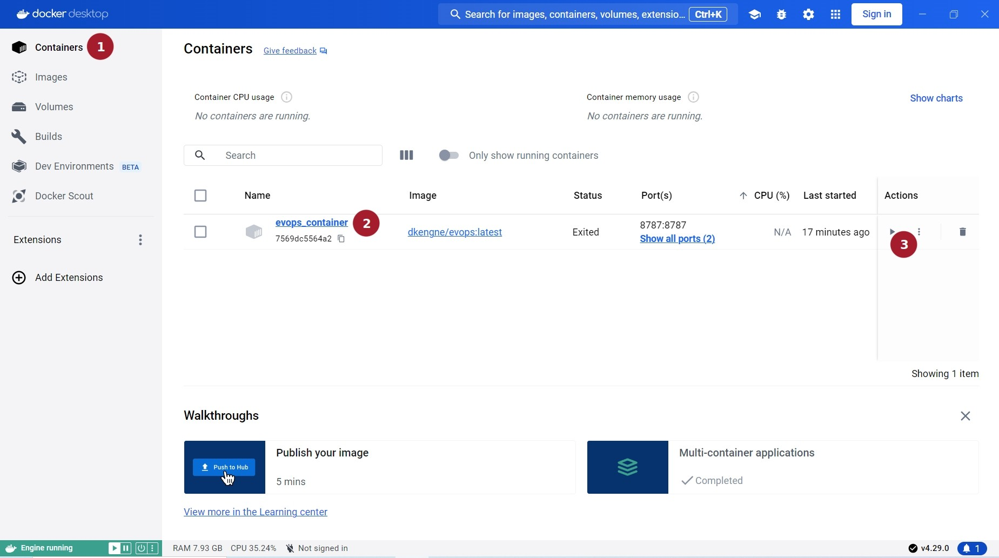
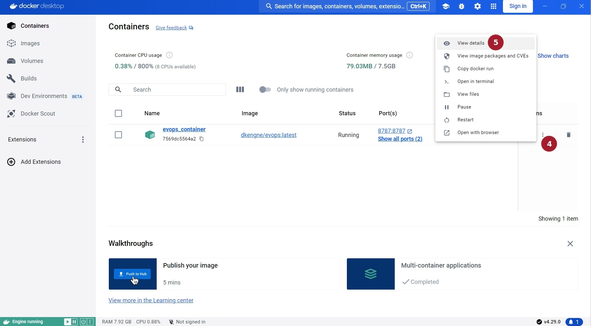
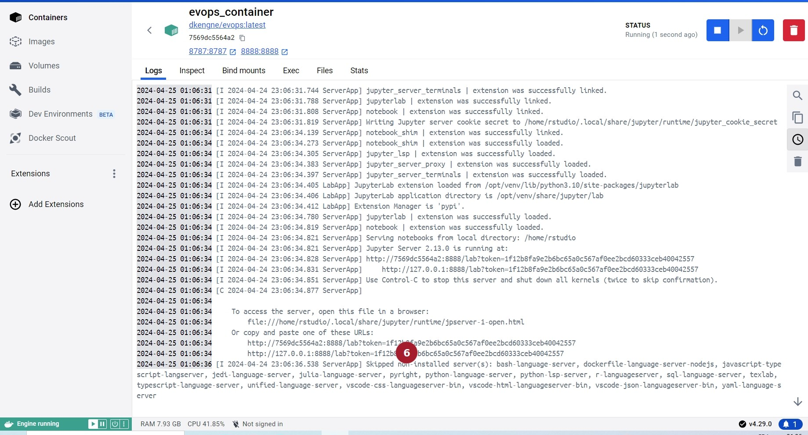
View resource utilization
To view resource utilization of a running container from Docker Desktop, one can proceed as follows.
Click on the Containers tab to display the list of running or stopped containers.
Search for the running container concerned by resource consumption.
Click on the vertical dotted button right to the stop button.
Select View details in the scrolling menu.
Click on the Stats tab to display resource utilization charts of the selected container.
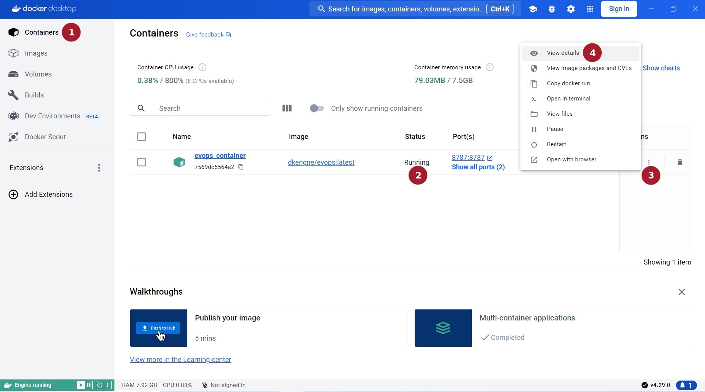
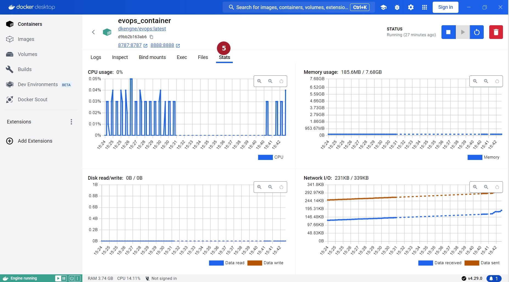
Delete evops app container
To delete a created docker container from Docker Desktop, one can proceed as follows.
Click on the Containers tab to display the list of running or stopped containers.
Check the box left to the container name to delete.
Click on the Delete button.
Click on the Delete forever button to confirm deletion.
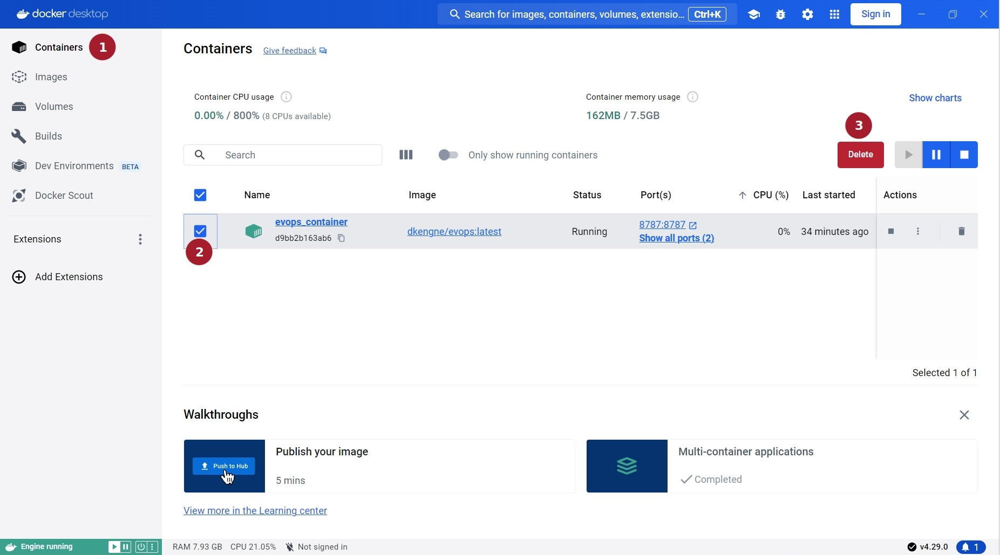
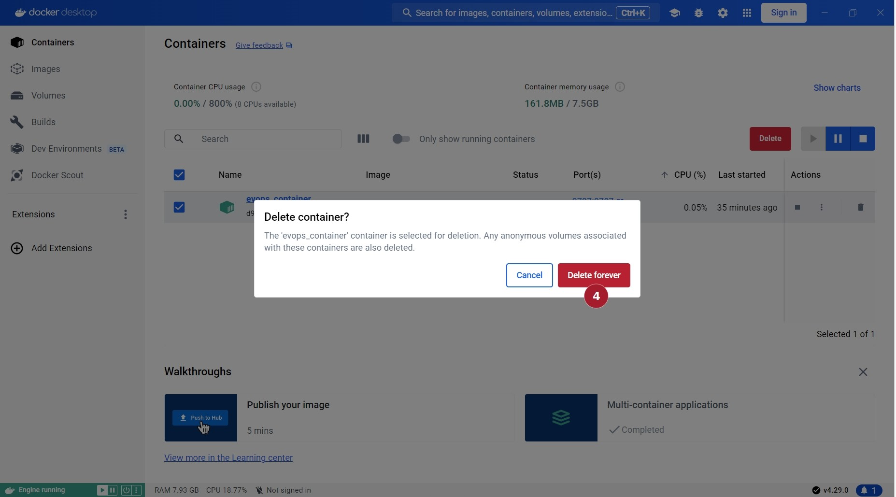
Update evops app image
Before the update of a docker image associated with the evops app, delete all docker containers (running or stopped) using the image to update. After that, one can follow the steps described below to update the latest version of docker image called dkengne/evops from Docker Desktop.
Click on the Images tab to display the list of in use or unused images.
Search for the image called dkengne/evops and tagged as latest.
Click on the vertical dotted button left to the trash icon related to the found image.
Select Pull in the scrolling menu to start update.
Check the box left to the old image called dkengne/evops and tagged as <none>.
Click on the Delete button.
Click on the Delete forever button to confirm deletion.
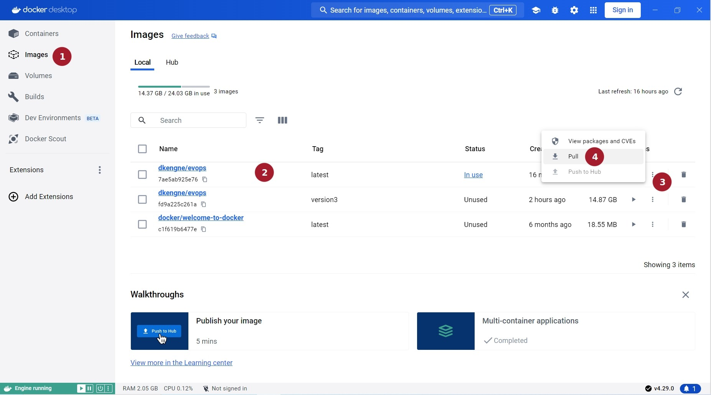
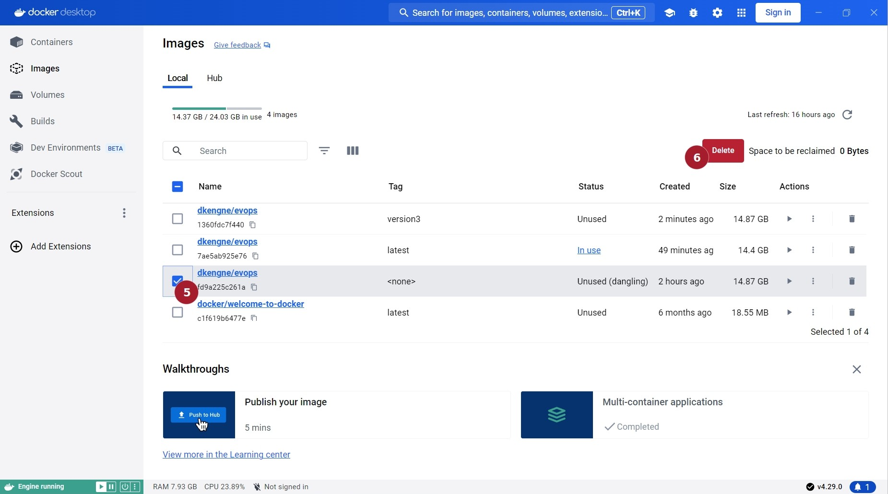
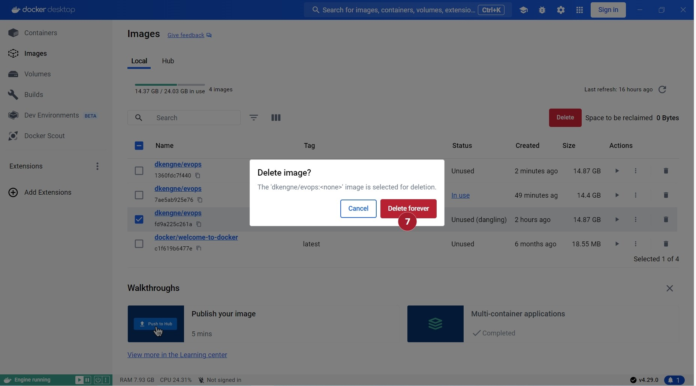